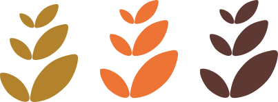
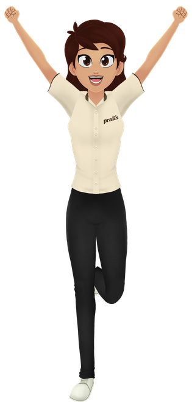

Sistema Pralís
Plataforma de Treinamento e Conduta
Manual inicial do projeto · Equipe · Gestão · TI · Criação de conteúdo

Dez blocos, uma história só
Visão geral
Arquitetura
Colaborador
Admin / CMS
Criar treinamentos
Mídia & conteúdo
Regras & permissões
Backend / TI
Roadmap
Manual rápido
Use ← → para navegar, F para tela cheia. A apresentação é offline e cabe em qualquer navegador.
Visão geral
O que é o Pralís, para que serve, qual problema resolve e quem usa.
Treinar a equipe com o jeito Pralís
O que é
Um app de treinamento e conduta que transforma o Código da Pralís numa jornada interativa — vídeos, quizzes e a Lis guiando cada passo.
Para que serve
Padronizar a cultura, os deveres e as regras da casa. Cada colaborador aprende, responde e assina o que entendeu.
Problema que resolve
Fim do treinamento solto em papel e WhatsApp. Conteúdo vivo, rastreável e com prova de conclusão — tudo num lugar só.
Cinco públicos, uma plataforma
Dono
Rodrigo. Cria conteúdo, vê tudo, define regras.
Gerente
Acompanha a própria equipe e as pendências.
RH / Admin
Cadastra pessoas e acompanha relatórios.
Colaborador
Faz a jornada, responde e assina o termo.
TI
Liga backend, Storage e coloca no ar.
O mesmo sistema serve do chão da padaria à sala da gestão — cada um vê só o que precisa.
Como tudo se conecta
Um ciclo fechado: o que o dono publica vira jornada para o colaborador e volta como dado para a gestão.
Arquitetura do produto
Como o sistema é dividido, como os dados fluem e o que já está pronto.
O sistema em três partes
App do colaborador
Tema escuro, emocional. Home "Trilha Viva", módulos, Lis, vídeos, quizzes, assinatura. É um PWA — instala no celular.
Admin / CMS
Tema claro, produtivo. Cadastro de pessoas, editor de conteúdo, preview real e publicação.
Dashboard / Relatórios
Visão da gestão: progresso, conclusões, pendências, drill-down gerente → equipe → colaborador.
Mesma base de código, dois mundos visuais: quente para quem aprende, limpo para quem gerencia.
Da edição ao relatório
LocalStorage agora, Supabase depois
100% no aparelho (localStorage)
O sistema roda inteiro sem internet e sem servidor. Ideal para validar produto, fluxo e conteúdo agora — sem custo e sem risco.
- Funciona offline, modo demonstração
- Zero dependência externa
- Perfeito para testar com a equipe
Supabase + Storage (na nuvem)
Quando ligado, o conteúdo e as pessoas passam a viver na nuvem, compartilhados entre dispositivos — sem reescrever o app.
- Conteúdo central, multi-dispositivo
- Mídia em Storage (vídeo/áudio)
- Base para push e analytics
A virada é uma chave: hasSupabase. Sem as credenciais, tudo continua local. Nada quebra na transição.
O que já está pronto · o que falta
✓ Pronto e funcionando
- App do colaborador completo — Home, módulos, Lis, quizzes, enquetes, assinatura
- Admin / CMS — cadastro de pessoas, gerentes, editor de conteúdo
- Relatórios Pro com drill-down gerente → equipe → colaborador
- Preview real do módulo no celular dentro do editor
- Rascunho → publicação e enquetes (poll)
- PWA — instala no celular, service worker ativo
○ Próximas fases
- Ligar o Supabase real (migrations já escritas)
- Upload de mídia no admin (vídeo/áudio)
- Lis com áudio + texto sincronizado
- Área de Avisos e push notifications
- Analytics de engajamento e conclusão
- Login com Supabase Auth (produção)
Experiência do colaborador
A jornada de quem aprende: Home, módulos, Lis, quizzes e assinatura.
A jornada começa acolhendo
A Home é uma trilha viva: a Lis dá as boas-vindas, mostra o próximo passo e celebra cada conquista. Leve, sem loops infinitos — feita para o ritmo de quem trabalha.
- Lis como guia — apresenta cada módulo com fala própria
- Progresso visível — o colaborador sempre sabe onde está
- Próximo passo claro — um caminho, não um mural confuso
Um passo de cada vez
Desbloqueio em sequência
O próximo módulo só abre quando o anterior é concluído. Aprendizado em ordem, sem pular etapas.
Progresso salvo
Cada conclusão fica registrada. O colaborador pode parar e voltar de onde estava.
Por cargo
Além dos módulos gerais, cada um recebe os treinamentos do seu cargo (Preparo, Atendimento, Caixa…).
A regra de desbloqueio (prevDone) é uma lógica aprovada e congelada — a base do aprendizado em trilha.
Conteúdo que conversa
Fala da Lis
A guia explica o tema com voz própria e jeito humano.
Vídeos
Trechos curtos antes das perguntas, no formato story.
Quizzes
Perguntas que confirmam o que ficou claro — com feedback.
Enquetes
Opinião da equipe (poll), única ou múltipla escolha.
Tudo dentro do StoryPlayer — uma experiência tipo "stories", natural para qualquer pessoa que usa celular.
Aprendeu, assinou, valeu
Ao final, o colaborador assina o termo do Código de Conduta. A assinatura guarda data, versão do documento e identificação — uma prova real de que ele leu e concordou.
- Validação de conclusão antes de liberar a assinatura
- Termo versionado — fica registrado o que foi assinado
- Dados probatórios — data, versão, identificação
de Conduta da Pralís.
Do primeiro "oi" ao termo assinado
Boas-vindas
Lis recebe e apresenta a trilha
Módulos gerais
Conduta, deveres, proibições
Módulos por cargo
Preparo, atendimento, caixa…
Quizzes & enquetes
Confirma o aprendizado
Assinatura
Prova de conclusão
Acompanhamento
Gestão vê o resultado
Admin / CMS
O painel da gestão: pessoas, relatórios e o editor de conteúdo.
Claro, rápido, profissional
O admin é um SaaS limpo (estilo Linear/Notion), tema claro, focado em organização e produtividade. A identidade Pralís aparece na cor, na tipografia e nos detalhes — nunca em decoração.
Dashboard
Visão geral com indicadores e atividade.
Colaboradores
Cadastro completo e visão 360º.
Gerentes
Equipes e responsáveis.
Módulos
Editor de conteúdo e publicação.
Gerente → equipe → colaborador
Drill-down 360º
Do gerente até o colaborador: status, progresso e pendências de cada um.
Ações rápidas
Cadastrar, editar, acompanhar — em poucos cliques, com estados vazios bem resolvidos.
Responsivo
Funciona no desktop e no celular do gestor.
Decidir com dados, não com achismo
Filtros & busca
Por gerente, cargo, status, período. Encontre quem precisa de atenção.
Exportações
Leve os dados para fora quando precisar prestar contas.
Progresso & conclusão
Quem começou, quem terminou, quem assinou — em uma tela.
Pensado para o dia a dia da gestão: encontrar pendências e agir rápido.
Uma timeline única de blocos
O editor abandona abas confusas: tudo vira uma linha do tempo de blocos (texto, vídeo, quiz, enquete). Arrasta para reordenar, edita inline e vê o resultado real.
- Preview real no celular — o módulo roda de verdade ao lado
- Arrastar & soltar blocos, perguntas e opções
- Rascunho → publicar — controla o que o colaborador vê
Criação de treinamentos
Como montar um treinamento do zero — passo a passo.
Criar um treinamento em 6 passos
As peças de um módulo
Fala da Lis
Texto narrado pela guia. Áudio sincronizado vem na próxima fase.
Texto
Explicações, listas, destaques de conduta.
Vídeo
Inserido antes das perguntas. Upload real vem na próxima fase.
Quiz
Perguntas de múltipla escolha com correção.
Enquete (poll)
Opinião da equipe — única ou múltipla, anônima opcional.
Ordem livre
Tudo arrastável. A trilha vira o que você desenhar.
Mídia e conteúdo
Vídeo, áudio da Lis, texto sincronizado e o futuro Storage.
Leve no celular, bonito na tela
Vídeo
MP4 (H.264) como padrão; WebM e HLS para escala e streaming.
Áudio da Lis
Narração própria por fala — preparada para reutilização.
Texto sincronizado
Cues que acompanham o áudio, palavra por trecho.
Legendas
VTT/cues para acessibilidade e ambientes sem som.
Subir mídia direto pelo admin
- Upload no editor — arrastar vídeo/áudio/imagem
- Supabase Storage — buckets: vídeo, áudio, imagem, pôster, Lis
- URLs nos blocos — a mídia entra direto na timeline
- Leitura pública para mídia; anexos privados
Boas práticas de vídeo (celular)
• Vertical 9:16 ou quadrado · curto (15–60s)
• H.264, ~720p, bitrate enxuto
• Pôster/thumb para carregar rápido
• Sempre com legenda — muita gente assiste sem som
Regras e permissões
Quem é quem, o que cada um pode fazer e como as regras funcionam.
Cada papel, seu acesso
| Pode… | Dono | Gerente | RH / Admin | Colaborador |
|---|---|---|---|---|
| Criar / editar módulos | Sim | — | — | — |
| Publicar conteúdo | Sim | — | — | — |
| Cadastrar pessoas | Sim | Equipe | Sim | — |
| Ver relatórios | Tudo | Só a equipe | Sim | — |
| Fazer a jornada | — | — | — | Sim |
| Assinar o termo | — | — | — | Sim |
O gerente enxerga apenas a própria equipe; o dono enxerga tudo. (Login de admin atual será migrado para Supabase Auth na fase de produção.)
Conteúdo certo, pessoa certa
Por cargo
Módulos "geral" vão para todos; módulos "por cargo" só aparecem para quem é daquele cargo (Preparo, Atendimento, Caixa…).
De desbloqueio
O próximo módulo só abre após concluir o anterior. Sem atalhos no aprendizado.
De assinatura & validação
Só assina quem concluiu. A assinatura guarda data, versão e identificação como prova.
Essas regras são a espinha dorsal do produto — estáveis e preservadas em todas as fases.
Backend / TI
O que a equipe técnica precisa para colocar no ar.
Stack & como roda hoje
Front-end
React 18 + Vite + TypeScript + Tailwind + Framer Motion.
Dados (hoje)
localStorage — roda 100% sem servidor. Modo demo/local.
PWA
Service worker ativo — instala no celular, funciona offline.
Nuvem (planejado)
Supabase + Storage, ligados por chave de ambiente.
A virada para a nuvem é controlada por VITE_SUPABASE_URL + VITE_SUPABASE_ANON_KEY. Sem elas, tudo continua local.
Tabelas & segurança
| Tabela | Guarda |
|---|---|
| training_modules | Módulos (conteúdo JSONB) |
| employees | Colaboradores |
| signatures | Assinaturas (prova) |
| lis_lines | Falas/áudio da Lis |
| poll_answers | Respostas de enquete |
| push_subscriptions | Inscrições de push |
Segurança (antes de dados reais)
- RLS — Row Level Security em todas as tabelas
- Policies de Storage — quem sobe/lê mídia
- Supabase Auth — login real do admin
- LGPD — minimizar dado, GPS opcional e consentido
As migrations 0004–0006 já estão escritas (idempotentes). RLS e escrita ficam no hardening 0007.
Checklist técnico de produção
Roadmap
Onde estamos e para onde vamos — fase por fase.
De onde estamos ao app na loja
Produto local
App, admin, relatórios, editor — 100% funcional offline
P1 · Supabase
Conteúdo na nuvem + Storage + upload de mídia
Edição rica
Lis com áudio/cues, enquete, versionamento
Avisos & push
Comunicados + notificações no celular
Analytics
Engajamento, conclusão, ritmo (com LGPD)
Cada fase é retrocompatível: o localStorage continua de rede de segurança e a experiência do colaborador nunca muda.
Manual rápido
As tarefas do dia a dia, em uma olhada.
Como fazer as coisas
É provar e ser feliz
Conteúdo vivo, equipe treinada, cultura registrada.
Obrigado · Equipe Pralís · TI · Gestão